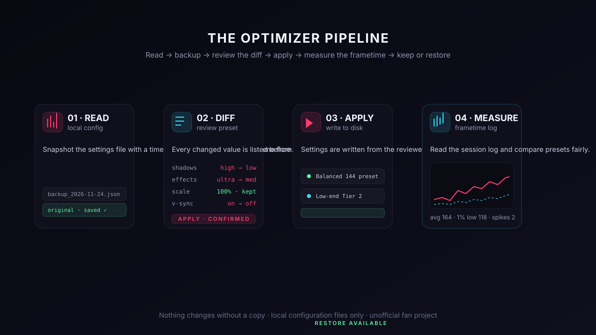

FPS presets
Ready-made profiles for performance, balanced and quality play. Each preset changes a named set of settings, so you can see exactly what moved instead of guessing which slider helped.
A local Windows utility that turns scattered graphics settings into tested presets — then backs up your config, applies a profile and shows the frametime cost in one window.
Built for tuning, not guessing
Every option is written against a real local config file, with a backup taken first. Nothing is injected into the game and nothing runs in the background.
Ready-made profiles for performance, balanced and quality play. Each preset changes a named set of settings, so you can see exactly what moved instead of guessing which slider helped.
Three tiers for older laptops and budget builds. The tool lowers the settings that cost the most frames first, and leaves resolution scale and sharpening at readable values.
One click snapshots the current configuration with a timestamp. Restore any snapshot later, so an experiment that makes things worse costs a click, not a reinstall.
Reviews the full settings set and flags combinations that hurt frametime without a visible gain: redundant effects, over-sampling and shadow values past the point of return.
Reads the frame log after a session and charts average FPS, 1% lows and frametime spikes, so a preset is judged by consistency, not by one lucky minute in the spawn room.
Each preset exports as a readable text summary with the values it changes. Keep it next to the backup, paste it into a support thread, or rebuild the same setup after a patch.
Three steps
Open the tool and save the current state. The backup carries a timestamp and the game build it came from, so old snapshots are easy to tell apart.
Choose a performance profile or a low-end tier. Review the diff before applying it — every changed value is listed in plain language.
After a session, load the frame log and compare average FPS, 1% lows and stutter count against the previous preset. Keep the winner.
Local by design
The utility works with configuration files on disk. It has no account system, no telemetry and no network features.
This is an unofficial fan-made utility, not affiliated with or endorsed by the game's publisher. It does not promise extra frames — results depend on your hardware, drivers and the current game build. Use it at your own risk, keep the backup, and review the game's terms before changing files on disk.
Closed beta means the preset list and the config format can change between builds. If a patch rewrites the settings file, wait for an updated build rather than forcing an old preset.

The pipeline
Read the file, snapshot it, show the diff, apply only what you approve. The same order every time — which is what makes a preset worth comparing at all.
The frametime panel closes the loop: it reads the session log you point it at, so the next decision is based on 1% lows and spike count instead of a number in the corner of the screen.
Closed beta
Copy the password below, download the archive, and unpack it with that password. The build is updated between test sessions, so always take the file from this page.
Before you run it: close the game, keep your own copy of the config folder, and read the diff window before applying a preset.
Windows SmartScreen: a new unsigned build may show a warning. That is expected for a closed beta; do not disable system protections globally.
github
Unpack the archive with the password above. No auto-download and no redirects — the button starts one manual download. Builds change between sessions.
Questions
No. It only reads and writes local configuration files, and it takes a backup first. It does not inject code, attach to the process or draw an overlay.
No. It applies conservative settings that usually reduce GPU and CPU load, but the result depends on your hardware, drivers and the current game build. The frametime monitor exists so you can measure the difference instead of trusting a claim.
Restore the snapshot taken before the change. The original state is kept as a separate snapshot, so you can always return to stock settings.
Usually, but a patch can rename or restructure settings. If the tool reports an unknown config layout, do not force an old preset — wait for a beta build that matches the current format.
No account. The utility runs offline; the only online step is downloading the build from this page.
No. It is an unofficial fan project, not affiliated with or endorsed by the game's publisher. Use it at your own risk and review the game's terms before changing files on disk.